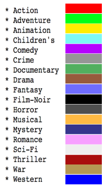

Users: H state for every sequence
Movies: W matrix of denselayer
Hidden: \(h_t = (1 - u_t) \odot h_{t - 1} + u_t \odot c_t\)
Update: \(u_t = \sigma_u(x_t W_{xu} + h_{t - 1} W_{hu} + b_u)\)
Candidate: \(c_t = \sigma_c(x_t W_{xc} + r_t \odot (h_{t - 1} W_{hc}) + b_c)\)
Reset: \(r_t = \sigma_r(x_t W_{xr} + h_{t - 1} W_{hr} + b_r)\)
This represents a map of every input-sequence of the network. A step in the sequence is chosen (see TSNE Step). This step's hidden vector is a 50 dimension vector. All these 50 dimensions vectors are then mapped to 2 dimensions vectors using TSNE.
- Cliking a circle: Displays the heatmap of the H vector below. Displays the prediction values on the right panel by the radius of the dots. Displays the input movies on the right panel by red dots. Displays the next target by a green dot.
- Prediction Rate: Shows on every dot (representing a user in the test set), the sum of the prediction percentage granted by the network for the target at every step.
- Show current user: Recolors the currently selected user in red.
- TSNE Step: Select which step of the 30step sequence should be used to reduce the users to 2 dimensions
This represent a map of every movie in the network. After training, the network has created in his denselayer a weight matrix that maps every user-vector to a movie-vector that allows prediction. By taking this matrix as a vector of movies with 50 dimensions, I can reduce them to 2 dimensions using TSNE.
- Colors: Green is for the next movie target. Orange is for a target after the next one. Red is for a previous input.
- Cliking a circle: Selects this movie, in the currently selected input-step, in the currently selected user to display the saliency in the graph below.
- Reset: Put the dots back to their original color and size.
- Genres: Colors the dots with a linear combination of their genres. Using: 
- Popularity: Colors the dots with the number of time the movie appears in the learning set.
- Bias: Colors the dots with the value of the movie bias in the denselayer at the output of the network.
- Toggle Paths: Toggle the views of the paths between the input movies.
The heatmaps are representing evolution of the Hidden, Reset, Update and Candidate vectors during the execution of the sequence.
- Clicking the Hidden Heatmap: When clicking a sequence-step, it changes the top-right panel to show the predictions after the selected step. It also cahnges the current step to allow the selection of a movie during this step for the saliency graph.
- Saliency graph: In orange and white: respectively Max adn Mean of the saliency for each input relative to the selcted output.
Currently selected: User: None --- Sequence: None --- Movie: None
Network visual description: